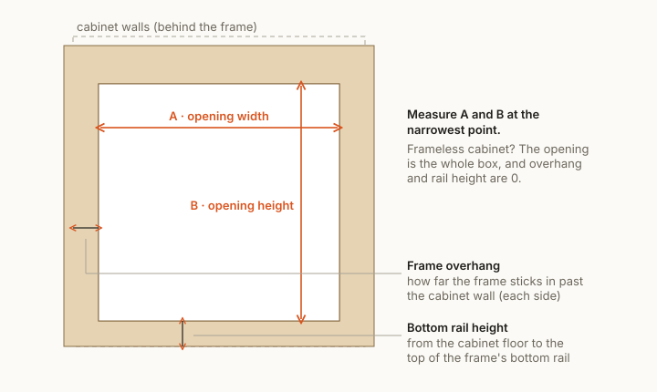
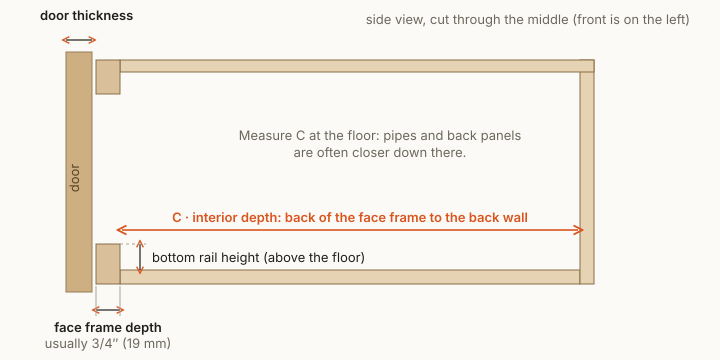
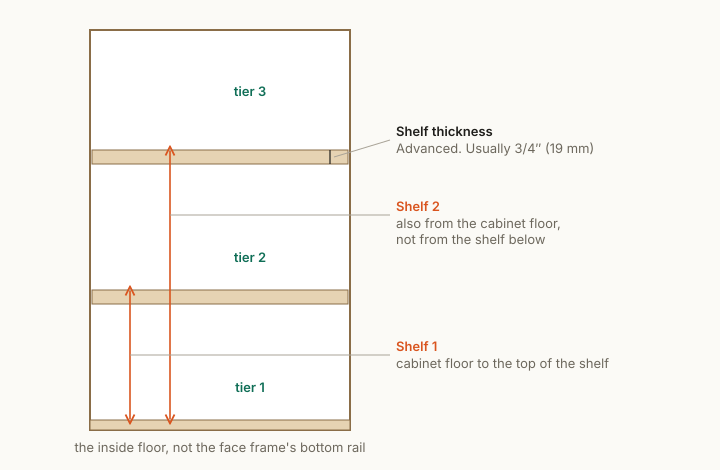

Measuring your cabinet
Most cabinets need three numbers and two answers. Everything else has a sensible default you can override later. Measure in whichever units you like: the generator takes inches (fractions like 11 3/4 work) or millimetres, and you can type mm or " after any number to switch units for that field.
The three numbers

A · Opening width. The clear width you could pass a box through: inside edge to inside edge of the face frame. Measure at the top, middle and bottom and use the smallest.
B · Opening height. The clear height, from the top of the bottom rail to the underside of the top rail.
C · Interior depth. From the back of the face frame to the back wall, measured at the floor. Pipes, back panels and plumbing access holes are often closer at floor level.

The two answers
Cabinet type. Look at the front edge of the cabinet.
- Face frame: a wooden frame (usually 1½–2″ wide) is glued to the front of the box, and the opening is smaller than the inside of the box. Common in North America.
- Frameless: no frame, so the opening is the whole box. Common in Europe, Australia, and IKEA kitchens.
Your door. Will you mount it on the pull-out (recommended), keep it hinged, or is there no door? If you keep it, tell the generator which side the hinges are on and whether the door opens past 90°.
Fixed shelves
If your shelves lift out, take them out: one tall pull-out holds more than several short ones. For each shelf that's glued, nailed or slotted in, add it under Fixed shelves: measure from the cabinet floor to the top of the shelf.

Every gap between shelves gets its own pull-out, called a tier. Its rails screw to the shelf below it.
- Shelf thickness (Advanced, default 3/4″ / 19 mm). Measure at the front edge.
- Shelf setback (Advanced, default 0). If the shelf's front edge sits behind the back of the face frame, how far. Tiers on shelves start that far back.
- A gap shorter than about 3½″ (90 mm) can't fit two rows of openGrid cells. The generator leaves it empty and says so.
- The generator assumes each shelf covers the full width and depth. For a half-depth shelf, add a keep-out instead.
Optional numbers
Open Advanced in the generator only if your cabinet differs from the defaults.
| Measurement | Default | When to measure it |
|---|---|---|
| Frame overhang (left, right) | 10 mm face frame, 0 frameless | Your frame sticks in a lot further, or unevenly |
| Bottom rail height | 15 mm face frame, 0 frameless | Measure from the cabinet floor to the top of the bottom rail. This one matters: a tall rail raises the slides and can call for bigger rails |
| Top rail drop | 10 mm face frame, 0 frameless | Rarely matters |
| Face frame depth | 19 mm (3/4″) | Sets the door bracket depth if you mount the door |
| Rear width, rear height | Same as the front | The back of the cabinet is narrower or lower than the front (corner cabinets, sloped backs) |
| Shelf thickness, setback | 19 mm (3/4″), 0 | Only with fixed shelves. See above |
| Door thickness | 19 mm (3/4″) | Door mount: the bracket screws need at least 15 mm of door |
The defaults are educated guesses that haven't been checked against many real cabinets yet. If yours are different, measure.
Things in the way
Pipes, a garbage disposal, a drain trap, shelf pin strips: add them in Expert: keep-outs as boxes. Positions are measured from the inside front-left floor corner:
- X: across, from the left wall
- Y: into the cabinet, from the back of the face frame
- Z: up, from the floor
Then give each one a width, depth and height. Be generous: round up and add a little.
The generator tries every way of dodging each obstacle (narrower, shorter, lower) and keeps whichever loses the least space. The report tells you what each one cost.
Anything on the floor is in the rails' way too. The pull-out only stands on an obstacle that covers the whole floor of the opening, front to back (a raised platform, say). For anything smaller it steers around it instead, so no rail ends up standing on air or running through a pipe.
Check before you print
- The generator's 3D preview shows your cabinet as a ghost box. If something looks wrong, a measurement is probably wrong.
- Measure twice at the narrowest points. A pull-out that's 3 mm too wide doesn't go in.
- Use Copy link to save your settings. The link reloads the exact same pull-out later.